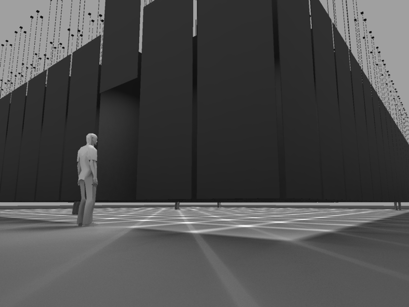
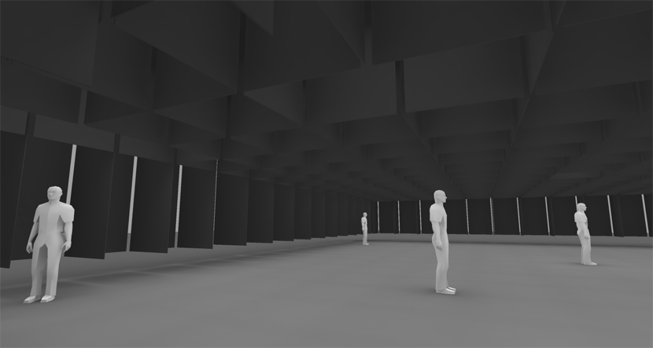
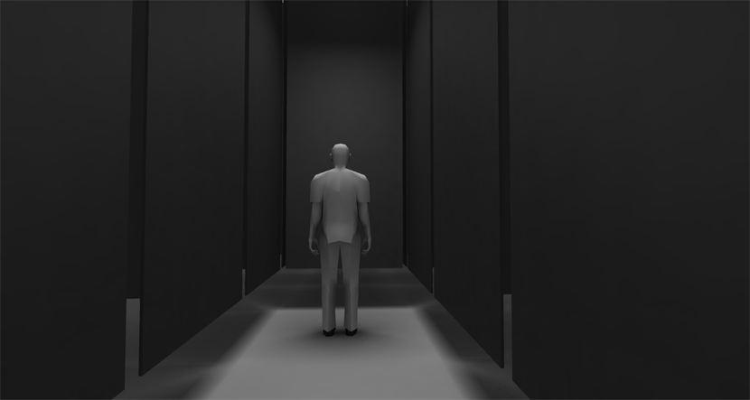
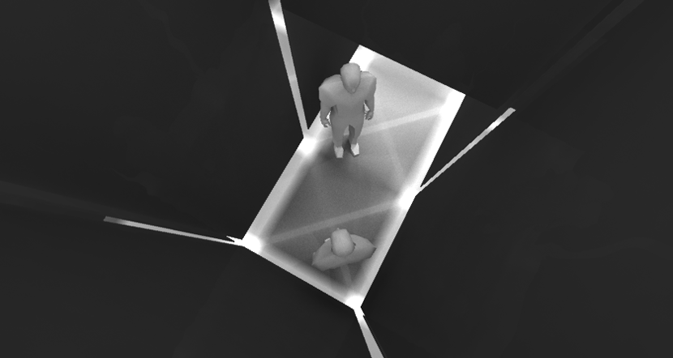
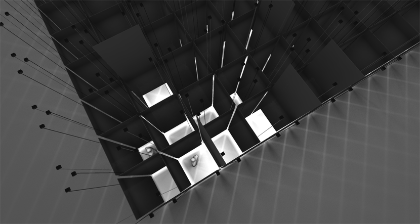
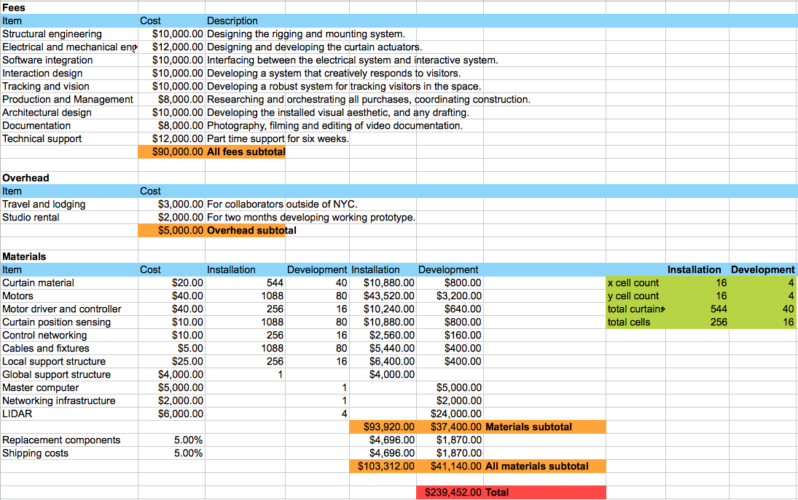

Mazes have played a part in our collective consciousness for millennia. Passed down through legends, they are a seductive possibility for built spaces, re-appropriating corridors into puzzles, meditation, and imprisonment. Some of the best mazes lead us through trap doors, secret passageways and twist the logic of the space just as we begin to decipher it. The more unpredictable, the more it takes on a life of its own, until you begin to question the sentience of the maze itself.
What if the labyrinth was, indeed, sensing and reacting? Approaching it, there appear to be no entrances, but then a wall section raises, and a path is presented ahead. You enter the narrow way, and with familiar instinct, walk along the route defined by the two opposing walls. Suddenly, the maze begins to reconfigure with you inside of it, and your instinct is lost. Your passageway closes, the space mutates, other walls peel back. The boundary around you opens up to reveal a large hall with only you inside.
You walk toward the center of the opening, distancing yourself from the material of the maze, but then it descends all around, transporting your place without you. Your freedom of movement chopped away until you are in a single cell of four walls at an arms length distance. An intimate space which you did not enter, but you are now in.
Walking down a new hallway, you turn a corner and find another visitor. The walls close behind you both as you walk. You see that there’s no choice but to progress, and allow your personal spaces to be consumed until you are closed off together. The maze holds the situation for a moment, then leads you off in separate directions. This continues, the labyrinth revealing large and small spaces, guiding people to each other, steadily revealing new choices and closing old ones. Passageways rotate. Spaces are inflated and swallowed. And perhaps you begin to think you understand how to navigate and avoid the same routes. Until the last wall closes behind you and you’re standing outside the labyrinth completely, exactly where you started

Entering the space

Visitors separated into the largest possible room

A hallway appears.

A large space suddenly shrinks when two people approach each other.

From above, the structure of the space isn't clear.

In progress, estimated around 4-5 months from funding & approval to opening.